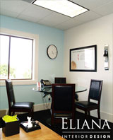
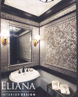
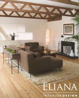
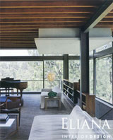

Eliana de Leon, Interior Designer — Paso Robles, CA
The desire to create comfortable and visually pleasing living spaces has existed for centuries. Creativity is the most important skill an interior designer can possess. A designer also needs to be responsive to client wants, have communication skills and create in diverse styles.
With over 20 years of experience Eliana de Leon brings a strong sense of color, texture, pattern and proportion to her projects. She embraces the idea of eclecticism to create dynamic environments. For example, a classical vase can be placed with Baroque art and antique Moroccan pillows can sit on a modern sofa.
Recent Projects from Eliana
|  |  |  |  |
|||
|  | Recent Press
|
{kind=link}
{kind=link}
{kind=link}
{kind=link}
{kind=link}
{kind=link}
{kind=link}
{kind=link}
Services Provided by Eliana
Eliana's projects cover a spectrum of budgets; everything does not need to be done at the same level of richness. Mixing old and new, high cost and low cost creates contrast and, therefore, creates interest.
Interior design services range from limited changes to complete renovations and the fee is based on the complexity of the project. Additionally, Eliana is available as a staging consultant on an hourly basis. She can access the current design and recommend improvements via staging or redesigning.
Contact Eliana
| Eliana de Leon, Interior Designer Email: elid45@aol.com Paso Robles, CA: (805) 237-0011 Los Angeles, CA: (310) 503-4465 Website: www.elianainteriordesign.com |
twitter.com/elianainterior |
He vivido y trabajado como decoradora en america latina, y hablo español.